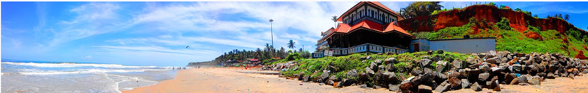
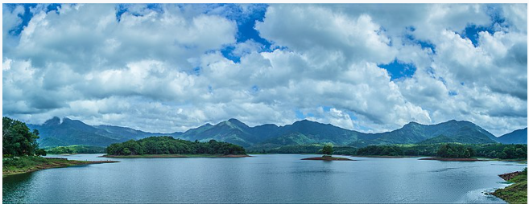

Main artcile-
Tourism in kerala
Kerala's culture and traditions,coupled with its varied demographics, have made the state one of the most popular tourist destinations in India. In 2012, National Geographic's Traveller magazine named Kerala as one of the "ten paradises of the world" and "50 must see destinations of a lifetime". Travel and Leisure also described Kerala as "One of the 100 great trips for the 21st century". In 2012, it overtook the Taj Mahal to be the number one travel destination in Google's search trends for India. CNN Travel listed Kerala amongst its '19 best places to visit in 2019'. Kerala was named by TIME magazine in 2022 among the 50 extraordinary destinations to explore in its list of the World's Greatest Places.
Kerala's beaches, backwaters, lakes, mountain ranges, waterfalls, ancient ports, palaces, religious institutions and wildlife sanctuaries are major attractions for both domestic and international tourists. The city of Kochi ranks first in the total number of international and domestic tourists in Kerala. Until the early 1980s, Kerala was a relatively unknown destination compared to other states in the country. In 1986 the government of Kerala declared tourism an important industry and it was the first state in India to do so. Marketing campaigns launched by the Kerala Tourism Development Corporation, the government agency that oversees the tourism prospects of the state, resulted in the growth of the tourism industry.Many advertisements branded Kerala with the taglineKerala, God's Own Country. Kerala tourism is a global brand and regarded as one of the destinations with highest recall.In 2006, Kerala attracted 8.5 million tourists, an increase of 23.7% over the previous year, making the state one of the fastest-growing popular destinations in the world. In 2011, tourist inflow to Kerala crossed the 10-million mark.
A panoramic view of Western Ghats mountain ranges from Mangalam Dam Reservoir